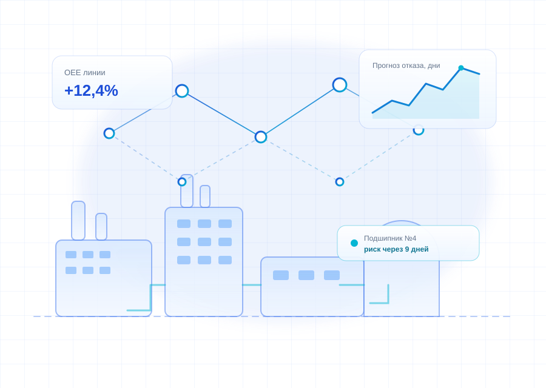

Внеплановые остановки
Оборудование выходит из строя между регламентными ТО. Каждый час простоя — прямые потери выпуска и срыв сроков.
Предиктивная диагностика по вибрации, току и температуре предупреждает за 3–14 дней до отказа.
Промышленный ИИ · пилот без остановки производства
Предиктивная диагностика, компьютерное зрение и цифровые двойники для действующих цехов. Начинаем с одного участка, показываем эффект в деньгах и масштабируем на весь контур.

Проблема → решение
Большинство потерь уже заложено в текущих процессах — их не видно в отчётах, пока не начнёшь смотреть на данные оборудования в реальном времени.
Внеплановые остановки
Оборудование выходит из строя между регламентными ТО. Каждый час простоя — прямые потери выпуска и срыв сроков.
Предиктивная диагностика по вибрации, току и температуре предупреждает за 3–14 дней до отказа.
Брак на поздних переделах
Дефект обнаруживается на финальном контроле, когда в деталь уже вложены материалы, энергия и время линии.
Компьютерное зрение находит отклонение в потоке и останавливает обработку сразу.
Перерасход энергоресурсов
Режимы работы подбираются по опыту смены, а не по фактическому оптимуму при текущей нагрузке и тарифе.
Модель оптимизации подбирает уставки под нагрузку и цену энергии в реальном времени.
Знания уходят с людьми
Опыт операторов и наладчиков не формализован: при смене персонала предприятие теряет накопленные решения.
ИИ-ассистент отвечает по регламентам и истории аварий, сохраняя опыт в системе.
Направления внедрения
Не нужно внедрять всё сразу. Мы выбираем направление по цене потерь и зрелости данных, а остальные подключаем по мере масштабирования.
Прогноз отказов насосов, компрессоров, приводов и подшипниковых узлов по телеметрии — без дополнительных датчиков там, где их можно избежать.
Контроль геометрии, поверхности и полноты сборки в потоке: 100% деталей вместо выборочного контроля контролёром.
Снижение расхода электроэнергии, пара и сжатого воздуха за счёт управления уставками и расписанием нагрузки.
Виртуальная модель участка для проверки режимов, такта и переналадок — без риска для реального производства.
Поиск по регламентам, журналам и истории ремонтов в одном окне. Ответ на вопрос смены — за секунды вместо часов.
Эффект в цифрах
Средние показатели по проектам на дискретном и непрерывном производстве. Итоговый диапазон зависит от зрелости данных и состояния оборудования.
−0%
Переход от ремонта по факту отказа к плановому вмешательству.
−0%
Дефект фиксируется на раннем переделе, а не у заказчика.
−0%
Уставки подстраиваются под фактическую нагрузку и тариф.
+0%
Рост доступности и производительности без покупки станков.
Цифры приведены как ориентир для демонстрационного лендинга и не являются публичной офертой.
Как проходит внедрение
Каждый этап заканчивается измеримым результатом и решением: продолжаем, корректируем или останавливаемся.
Смотрим, какие сигналы уже есть в АСУ ТП, MES и ТОиР. Выбираем участок с максимальной ценой потерь и проверяем качество истории.
Результат: карта данных и расчёт потенциала участка.
Собираем историю, обучаем первую модель и сверяем прогноз с фактическими событиями. Ничего не меняем в контуре управления.
Результат: работающая модель и замеренная точность прогноза.
Выводим рекомендации оператору, настраиваем пороги и алерты в существующей диспетчерской, обучаем смену работе с подсказками.
Результат: решения принимаются по данным, а не по ощущениям.
Тиражируем модель на однотипное оборудование и подключаем новые направления: зрение, энергию, цифровой двойник.
Результат: эффект на всём контуре, а не на одном стенде.
Передаём код, документацию и мониторинг модели вашей команде, сопровождаем дообучение на новых данных.
Результат: система живёт внутри предприятия.
Калькулятор
Оценка строится на снижении внеплановых простоев на 37% — среднем результате пилотных проектов. Двигайте ползунки, расчёт обновляется сразу.
Насосы, компрессоры, приводы, узлы линий
Внеплановые остановки, включая переналадку после отказа
Упущенная выручка и затраты на восстановление
Экономия в год
—
Расчёт демонстрационный: учитывает только эффект от снижения простоев и не включает экономию на браке и энергоресурсах.
Кейсы
Три типовых сценария внедрения — с фокусом на измеримый результат, а не на технологии.
Вопросы и ответы
Если вашего вопроса нет в списке — задайте его в форме ниже.
Нет. Мы используем сигналы, которые уже есть в АСУ ТП, MES и системах ТОиР. Дополнительные датчики ставим только там, где без них модель не набирает точность, — и согласуем это отдельно. Пилот идёт на действующем оборудовании.
Модели можно развернуть полностью внутри периметра предприятия — без выхода в интернет. Передача данных настраивается по вашим правилам: от полной изоляции до агрегированной телеметрии. Доступы выдаются по ролям и журналируются.
Для предиктивной диагностики обычно достаточно 6–12 месяцев истории по ключевым параметрам и журнала отказов. Если истории мало, начинаем с аномалий: модель учится на нормальном режиме и сигнализирует об отклонениях.
Ваша команда. Мы передаём код, документацию, инструкции по мониторингу и дообучению, проводим обучение специалистов. Дальше возможны два режима: самостоятельная эксплуатация или сопровождение с нашей стороны.
До старта фиксируем базовую линию: часы простоев, долю брака, расход энергии и стоимость часа остановки. После пилота сравниваем факт с базовой линией на сопоставимом периоде. Формулу расчёта согласуем с вашей экономической службой.
Заявка
Начнём с разговора о потерях, а не о технологиях. По итогам предложим участок, формат пилота и способ замера эффекта.